El elevador camillero tiene la especialidad de los entornos hospitalarios. La tecnología de control VVVF a través de su ordenador de comunicación integrado, hace que el operario que está en la planta baja monitoree el traslado de los pacientes, garantizando que el arranque y frenado del ascensor sea suave y cómodo. El diseño de seguridad plural, efectivamente disminuye las posibilidades de accidentes. Los pacientes que tienen dificultad para caminar, con seguridad puede entrar y salir de los ascensores sin ningún riesgo.
Características
Los varios dispositivos de seguridades permiten la nivelación del ascensor hasta el piso más cercano automáticamente en caso de un fallo de alimentación o que se detenga inesperadamente. Se puede tomar con prontitud el control del ascensor y comenzar a liberar a los pacientes para que el personal médico actúe, de esta forma los pacientes no se quedarán atrapados en el ascensor.
El ascensor montacargas utiliza la avanzada tecnología de micro-ordenador de control. A través de la unificación técnica, mejora en gran medida el rendimiento y la calidad del montacargas, bajando la ocurrencia de problemas. Porque adopta la tecnología AC de dos velocidades tecnología de accionamiento eléctrico, que hace que sea más sencillo para la estructura del elevador y más conveniente para el mantenimiento.
El ascensor montacargas tiene la cabina brillante, espaciosa, económica y práctica con el diseño optimizado. Tiene varias características, tales como la seguridad y la fiabilidad, buen funcionamiento, etc. Gran capacidad de carga se puede aplicar en varios usos y entornos tales como la fábrica, supermercados, biblioteca, almacenes, centros comerciales, etc. Satisfaciendo los requisitos de varios clientes.
Montacargas Convencional
Motor de Frecuencia Variable:
En gran medida, satisface las demandas de los usuarios de alta estabilidad hacia el ascensor.
Frecuencia variable en la máquina de tracción, más seguro y con ahorro de energía, alta eficiencia, bajo nivel de ruido, al momento de su funcionamiento, el buen rendimiento de lubricación.
Además de estas ventajas tenemos el privilegio de instalar montacargas con máquina gearles, reduciendo el espacio y ahorrando energía.
Sistema de control:
Aplican la tecnología de control a través de un ordenador, una red de comunicación en serie integrada, bucle type communication netword, sistema de autodiagnóstico, selectivo intelectual colectiva, el sistema de control que combina grupo de control, eleva la eficiencia de funcionamiento y la fiabilidad del sistema.
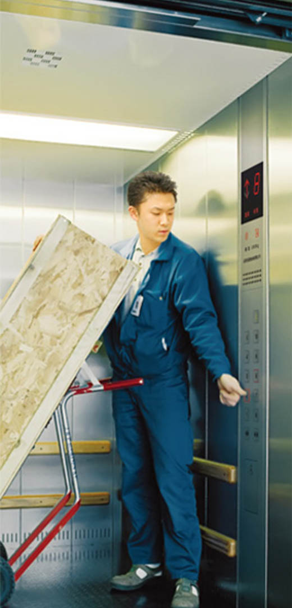
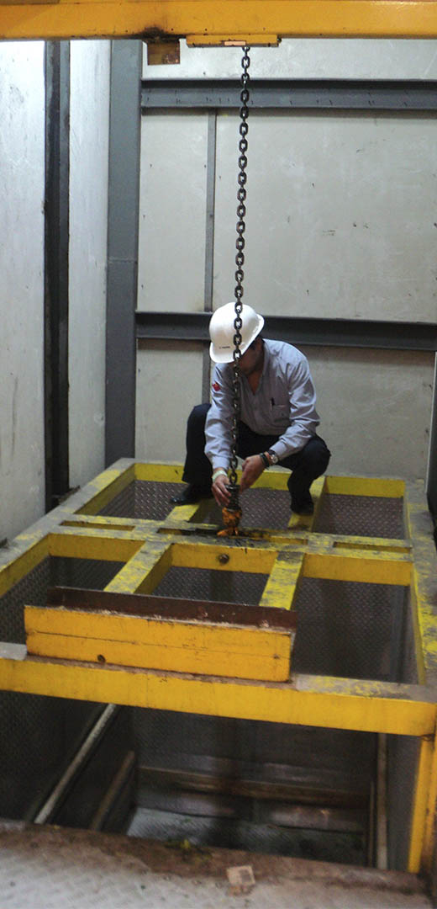
Montacargas Polipasto
Sistema de elevación a través de polipastos(tecles eléctricos), su izaje es mediante cables o cadena de uno o dos ramales, su motor es a dos velocidades lo que brinda un mejor confort al momento de su arranque, cuidando los elementos o carga a transportar.
CARACTERÍSTICAS:
Sistema de mando mediante pulsadores de marca
Capacidad de carga desde 300 kg hasta 5 toneladas
Cabina terminada en aluminio corrugado
Piso en toll corrugado
Ideal para supermercados, restaurantes, almacenes, etc.
La durabilidad del producto y el servicio que brinda dentro de las instalaciones es muy importante para el cliente, tanto en la industria como en el ambiente alimenticio, brindando un ambiente limpio y ordenado al momento de entregar los productos garantizando la eficiencia de su operación.
Características
Pequeño espacio requerido. No requiere obra civil robusta.
Diseño personalizado que hace la operación más flexible.
De carga ligera, los ascensores comprenden dos tipos, el tipo de ventana y presionando tipo trolley.
El montaplatos en esta serie son seguros, prácticos, elegantes, tranquilos, flexibles en la operación y de fácil mantenimiento.
El ascensor panorámico es un nuevo ascensor que integra el turismo y elevador de pasajeros en uno solo. Diseñamos el ascensor panorámico para satisfacer los requisitos adicionales para grandes viajeros.
El hermoso escenario externo se puede ver ampliamente el paisaje y la comodidad proviene de este equipo moderno! El ascensor panorámico adopta el nuevo tipo de frecuencia variable totalmente computarizada, modular y regulador de velocidad la tecnología de control (VVVF).
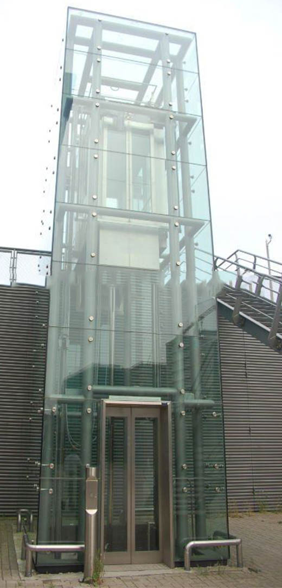
Características
Suaviza el vieje:
La fabricación de alta precisión, garantiza los ascensores de operación altamente estable y suave con una cómoda experiencia de los pasajeros.
Dispositivo de infrarrojos:
Es sensible reacciona a cualquier persona u objeto que entra en el rango de la sonda con las características de alta seguridad. Como resuly, los pasajeros se sientan más a gusto en entrar o salir de los ascensores.
El ascensor de pasajeros es flexible en el diseño de la cabina. Es la opción más ideal para hoteles, restaurantes, edificios de oficinas, edificios comerciales, centros de ocio, centros comerciales, etc. La combinación perfecta de practicidad y estética crea un espacio acogedor.
La forma más eficaz de auto inspección programa activar el elevador para visualizar completamente todas las funciones, todas las características del ascensor llevan un alto nivel de operación, brindando seguridad y satisfacción al usuario.
Máquina Estándar
El tradicional tornillo sinfín, o máquina de tracción garantiza el funcionamiento estable y fiable.
Los principales motores pueden ser controlados con precisión en tiempo real a través del ajuste de corriente y tensión de acuerdo a la carga de los ascensores, para garantizar la velocidad y frenado del ascensor.
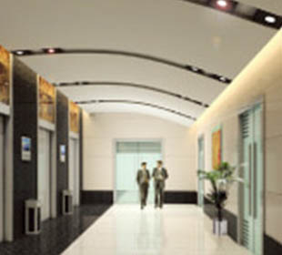
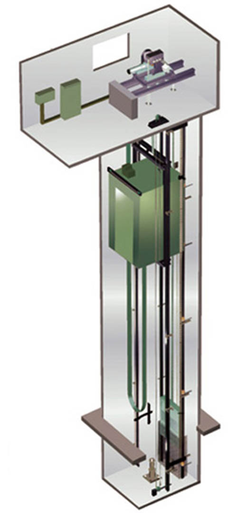
Máquina Pequeña
Sobre la base de heredar la moderna tecnología, SINTRAVE en fusión con SL-ELEVATOR, instalará pequeñas máquinas de tracción que ayudará al sistema de elevación y cumplirá con la verdadera protección del medio ambiente y las ventajas de ahorro de energía.
La máquina de tracción sin engranajes, mejora en gran medida el espacio a utilizarse debido a que no se construirá una sala de máquinas al mismo tiempo que reduce la pérdida de energía.
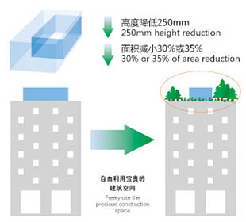
Sin Sala de Máquinas
Con el fin de satisfacer aún más las necesidades de las construcciones, SL-ELEVATOR ha diseñado una máquina de tracción sin engranes (gearles). Por lo tanto, no necesita cuarto de máquinas.
El peso de asignar los equipos de la máquina en el pozo puede ser transmitido por los componentes de estructuras de acero como guía, rieles, etc.; dentro del pozo. No hay necesidad de una sala de máquinas, se ahorra el espacio de construcción y reduce considerablemente el costo de construcción.
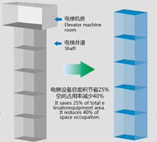
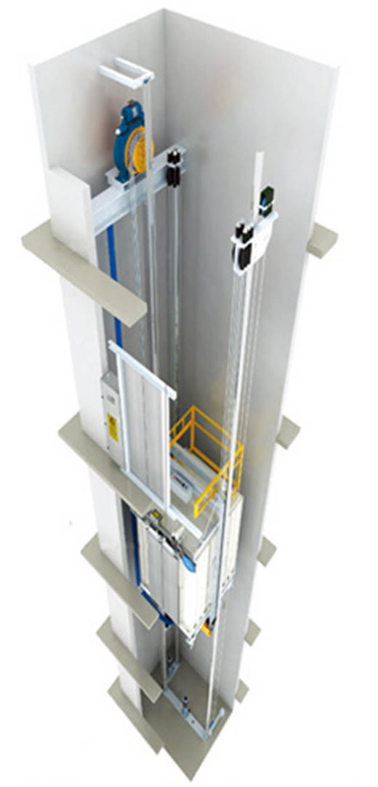
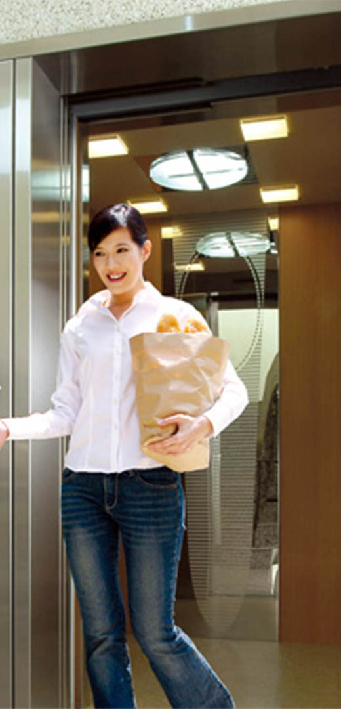
Elevador Residencial
Aplicamos tecnología avanzada, tanto en casa como fuera de ella para desarrollar y producir el nuevo estilo totalmente computarizado y modular la frecuencia de control de velocidad variable y regulación (VVVF).
Perfecta combinación de GSM de comunicación móvil y de Internet recoge el ordenador de a bordo instantánea y datos del convertidor de frecuencia. Se trata de la conexión inalámbrica de larga distancia de transporte.
Este tipo de elevadores en casa son famosos por el estilo aristocrático y de decoración avanzada, la estética visual elegante, el material elaborado y tecnología de fabricación consumada, son muy importantes al momento de imponerse. La calidad superior debe coincidir con el patrón alto de su edificio.
"SL-YASKAWA" ha diseñado este elevador para que usted gane la valoración general de sus colegas grandes en el círculo de elevación debido a la instalación simple, el de viaje de confianza, la fabricación elaborada y las propiedades seguras y cómodas.
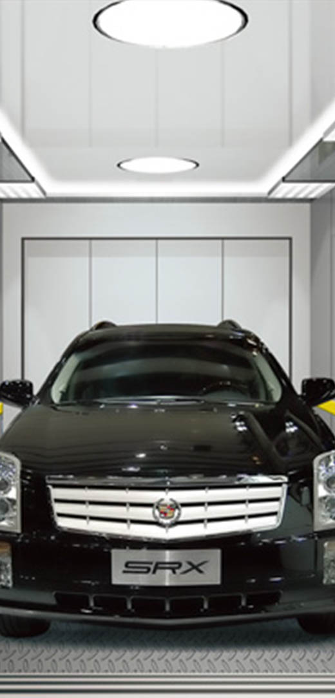
Características
Los paneles del automóvil se encuentran cerca al mando de operación del elevador. El conductor puede operar el elevador sin salir de su auto.
Dispositivo de seguridad guía se encuentra en la plataforma de cabina del ascensor, asegurándose de que el ascensor y el auto estén seguros.
La cabina de ascensor puede tener dos entradas, que garantizan la seguridad del auto mientras entraba y salía.
El elevador hidráulico es diferente de otro ascensor. Se tiene sus propias ventajas en el rendimiento y la aplicación. Ascensor hidráulico adopta la bomba y el cilindro con un alto rendimiento y calidad, lo que garantiza un funcionamiento extremadamente silencioso y suave. También utiliza múltiples medios de seguridad tal como el dispositivo anti-estancamiento, una válvula de una vía que impide que el aceite hidráulico retorne, etc.
El ascensor hidráulico tiene una precisión de nivelación de altura y funcionamiento estable y buena, alta fiabilidad, bajo costo. Es apto para museos, bibliotecas, apartamentos, aeropuertos, bancos, etc.
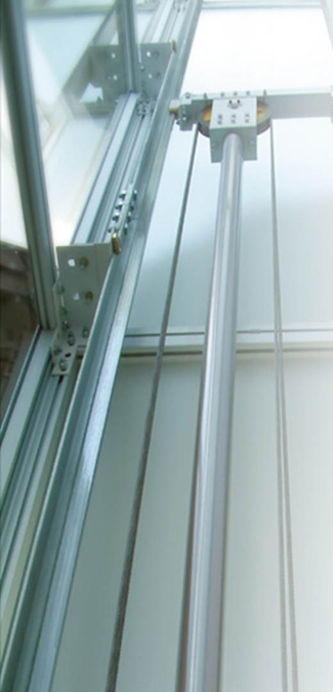
Características
No necesita cuarto de máquinas superior:
El grupo hidráulico se puede instalar en cualquier posición sin sentido cerca del pozo, ya que sólo necesita cuatro o cinco metros cuadrados de la sala de máquinas. También puede adoptar algunos lugares que no pueden ser utilizados previamente.
No tiene ninguna carga vertical a la construcción:
Debido a que no tiene espacio superior de la máquina, las cargas verticales tales como la carga de la cabina, puede actuar sobre el hoyo bien a través del cilindro de aceite hidráulico.
Elegantes y diseños modernos, traen la experiencia más fina de equitación. Aspecto diferencial, modelo rica y colorida en materiales, estilos diferentes.
Materiales perfilados para FRAME PASAMANOS y cubiertos: acero inoxidable, alúmina pulverizada en color marrón u original, placa de recubrimiento en polvo aluminio. Fuera de revestimiento de panel: panel de acero inoxidable, aluminio y plástico Panel, iluminaciones diferentes disponibles para su elección.
Escaleras Modernas
El uso previo de la tecnología de frecuencia variable VVVF, ergonomía frutos de la investigación, la tecnología de fabricación avanzada trae consigo las propiedades perfectamente seguras y confortables de la escalera mecánica. Mientras tanto, se ahorra la energía de los usuarios y los resultados en la reparación más conveniente.
Escalera mecánica está más allá de sus expectativas! Es aplicable para el centro comercial, supermercado, metro, etc. Aeropuerto con gran volumen de tráfico de pasajeros.
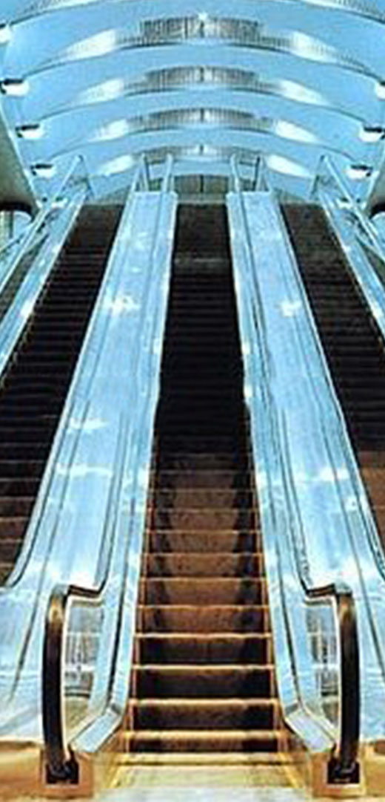
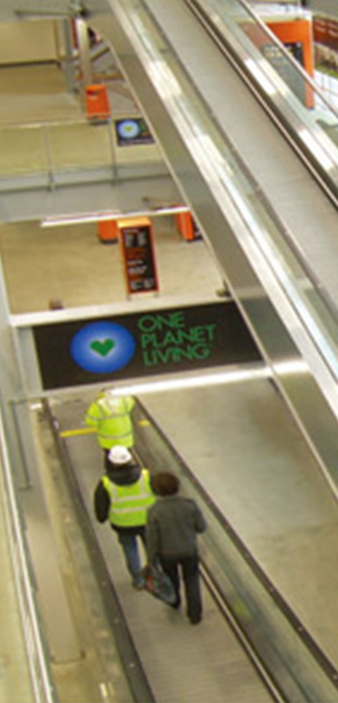
Pasillos Rodantes
En las ciudades modernas, los actos públicos de tránsito y transporte, como el gran tamaño de supermercado, la construcción pública, el aeropuerto, el recinto ferial, la estación de transporte transformación y así sucesivamente, la rampa móvil no sólo se puede abordar el problema del tráfico de flujo enorme de gente, pero también lo hace sentir como caminar en el camino llano mientras que en realidad hacia arriba y hacia abajo.
También es aplicable para las caminatas de larga distancia, babys carrito, compra de vehículos, vehículos para discapacitados etc., trae una gran comodidad para los usuarios que van de paseo o compras.
Tanto en las residencias de diseño moderno como en las que están dentro del casco colonial, han sido edificadas para no llevar ascensor por tener 3 o 4 pisos construidos, SINTRAVE en fusión con SL-ELEVATOR han diseñado el sistema de solución residencial, es decir sin afectar a la estética de la residencia se implementará un elevador en alguna parte de la residencia logrando satisfacer las necesidades de varios clientes.
Estamos orgullosos de fabricar elevadores dentro de nuestro país, dentro del tema soluciones residenciales, con puertas manuales y cabinas panorámicas todo hecho 100% por manos Ecuatorianas y con todas las normas de seguridad que rigen en nuestro país.
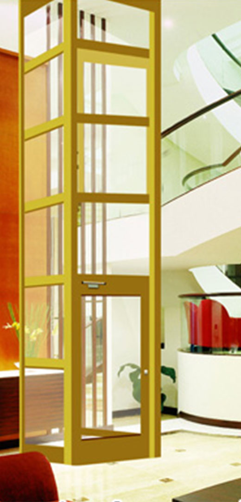
Características
No necesita cuarto de máquinas tradicionales, sin ningún tipo de costo de la construcción aumentó.
Especialmente diseñado para el ascensor de casa con una relación de tracción 01:01
La técnica de accionamiento VVVF, hace que el elevador tenga un muy buen confort
El soporte de tracción de la máquina se fija sobre la riel guía. El edificio no tendrá ninguna carga
Aplicamos 220V trifásica a la máquina de tracción
Puerta automática
Cumplir con "Home ascensor Estándar Nacional GB/T21739-2008"